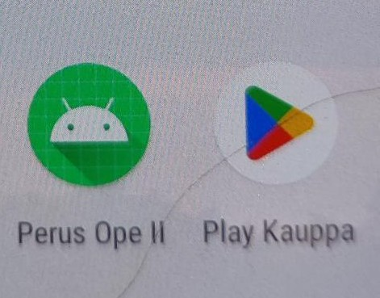

Ensimmäisenä kiinnostuin android äpeistä ja halusin oppia tekemään niitä androi pohjaisiin älypuhelimiin ja tabletteihin. Tämän vuoksi myös ensimmäinen ohjelmointikieleni,
jota aloin harjoitella liittyi tähän ympäristöön. Tämän vuoksi aloin tutustua Javaan, jolla sain tehtyä ensimmäisen android äppini kesällä 2019. Javan jälkeen tajusin,
että tulevaisuudessa kotlin on android pohjaiseen ohjelmointiin parempi ja tulevaisuudessa enemmän käytetty, joten kesällä 2020 aloin opetella kotlinia.
Ensimmäisenä valmistui ikioma android sovellukseni, joka sai nimekseen PerusOpeII
